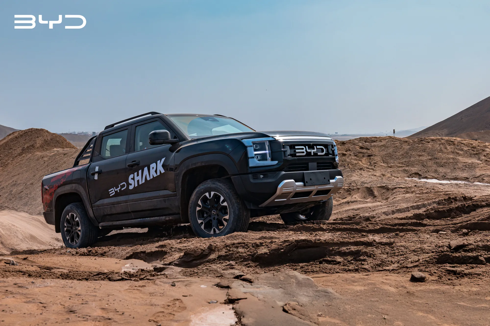
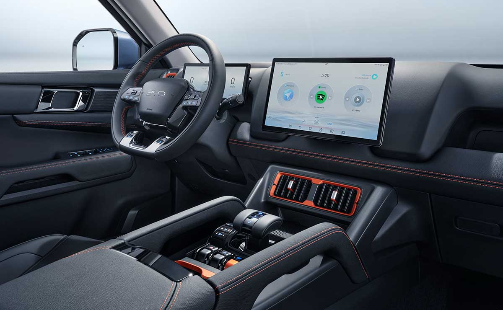

La BYD Shark es una pickup híbrida enchufable (PHEV) diseñada para combinar potencia, tecnología y eficiencia. Su sistema híbrido permite conducir tanto con energía eléctrica como con el motor de combustión, ofreciendo un excelente desempeño en ciudad, carretera y terrenos exigentes.
Construida sobre la plataforma DMO (Dual Mode Off-road) de BYD, la Shark proporciona una conducción estable, gran capacidad de carga y un alto nivel de confort. En su interior incorpora una pantalla táctil giratoria, conectividad inteligente, asistentes avanzados de conducción y acabados modernos que mejoran la experiencia del conductor y los pasajeros.
Gracias a su diseño robusto, tecnología innovadora y bajo consumo de combustible, la BYD Shark es una excelente opción para quienes buscan una camioneta versátil, capaz de enfrentar el trabajo diario y las aventuras al aire libre con eficiencia y seguridad.

S/179,000